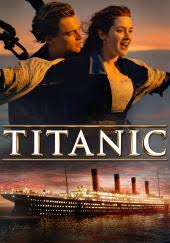

One of my favourite films
One of my favourite films is Titanic. It's a drama, although it's also a disaster film. The film stars Leonardo DiCaprio and Kate Winslet, American actor and English actress.
This's an amazing story about guy, Jack Dawson, who travels by Titanic ship from London to New-York. Then he meets Rose Dewitt Bukater, beautiful girl on shipboard. They fall in love with each other. However, it doesn't last long, because horrible disaster happens. Titanic hits huge ice berg. Ship starts sinking...
The acting was excellent. I particularly liked Kate Winslett. However, the best thing was the special effects, especially when Titanic starts sinking.
In my opinion, this film is full of love and action. I really liked it. Overall, I recommend Titanic everyone.

You can download here for free or watch the trailer